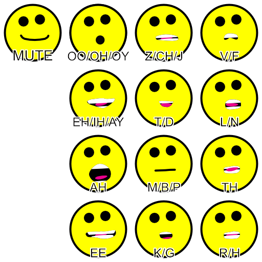
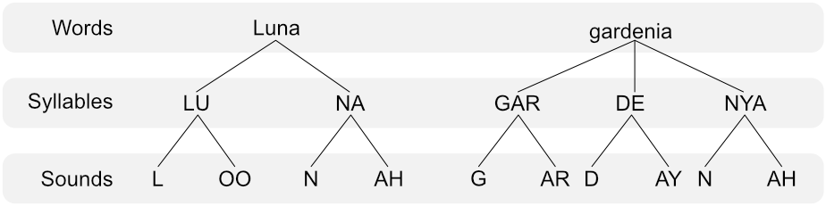

In a recent coding interview, I was asked to debug what they called a "singing simulator". The example program reminded me of the old FreeVerse toy, Jared the Butcher of Song. After the coding interview, I thought it would be fun to reimplement Jared using the described method from the coding interview.
Below you can enjoy Jared the Butcher of Song, reimplemented...
Demo
Coding Interview
For the coding interview, there was no code but a description of a program and a bug. I asked probing questions about how it was coded to get to the bottom of the described issue.
I won't disclose the issue or solution as discussed in the interview. However, I found that in my particular implementation the described issue didn't affect the program. I still implemented the discussed bug fix for completeness.
Choreography
Jared's original mouth movements were not accurate. I decided to create my own animations for the various mouth shapes and time them appropriately. This was accomplished by creating a set of sprites that approximate several mouth positions. I over-simplified the process by creating only 4 vowel positions, and 8 consonant positions. (Apologies to my SLP wife who is probably traumatized by my rudimentary oversimplifications). I found that adding teeth was necessary for the mouth shapes to make sense.

I took the lyrics and broke them down into syllables, and then from syllables to consonants and vowels.

Lastly, I ran through the music on this page and tapped on the space bar every time Jared went to a new syllable. This gave me millisecond values in the console to use for timing. I assigned the time values to each vowel in the syllable, and then fudged any paired consonant, usually by shaving off ~100 ms from the accompanying vowel value.
Disclaimer
I don't own the rights to Jared, or this recording, and am not affiliated in any way with FreeVerse Inc.